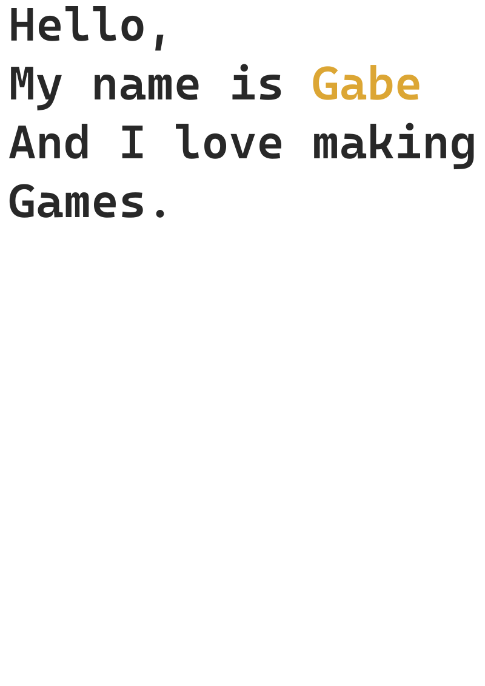
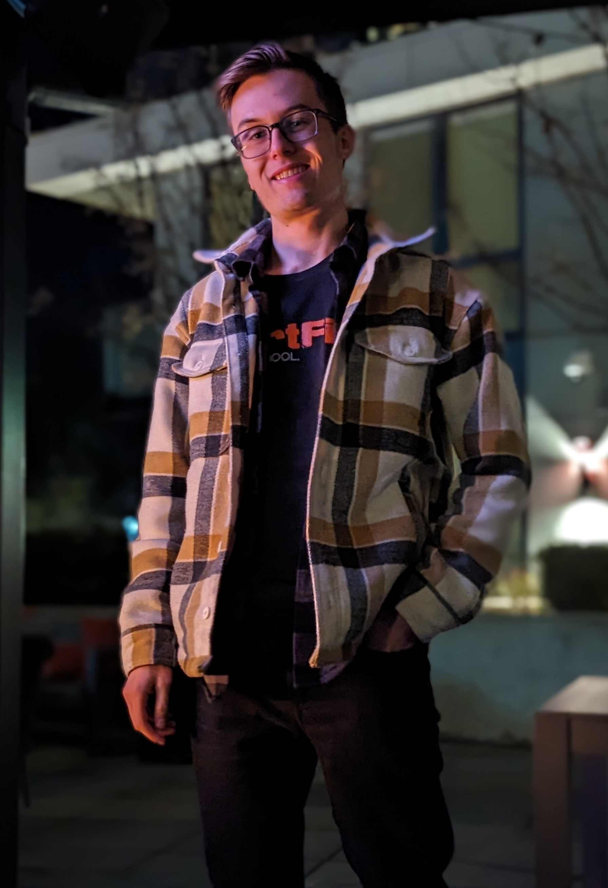
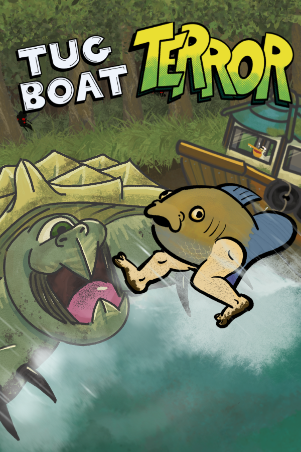
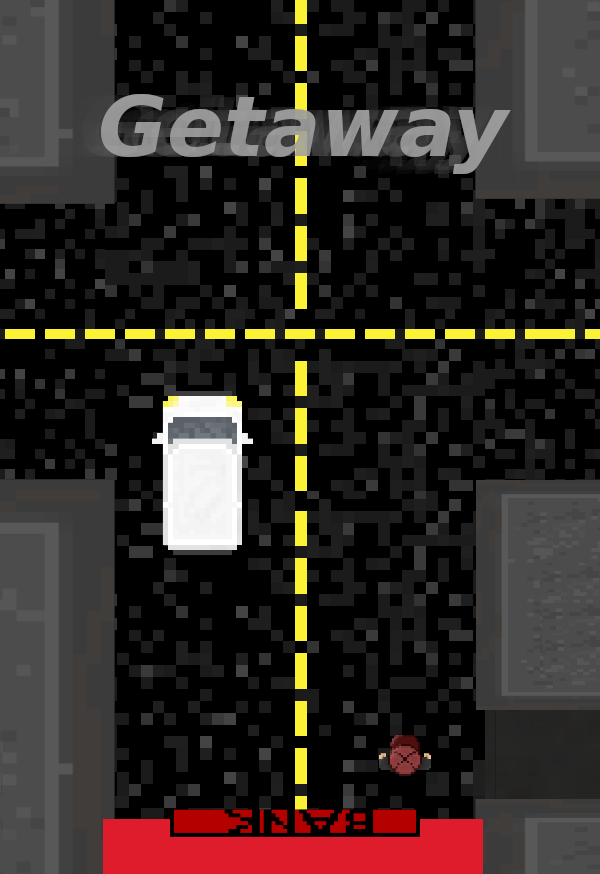

Growing up, I became captivated with technically and emotionally complex games
and their impact on the world. I knew that I had to be a part
of something so great. So I combined my favorite academic subject, math,
and hobby, video games, to become a programmer in the industry.
Now, I am a computer science student at DigiPen
Institute of Technology in Redmond, WA, USA focusing on game engine
architecture and graphics. With this, I continue to live out my
passion for making creative and
unique games on team environments.


Here are two games that I have made so far at my time at DigiPen.
The first game, Getaway was made in a 7 week time frame in the first semeseter.
It was to be written in C using an in house engine called CProcessing.
The second game, Tugboat Terror, also written in C, was made in a 14 week period using
a custom engine built alongside an engine architecture course.